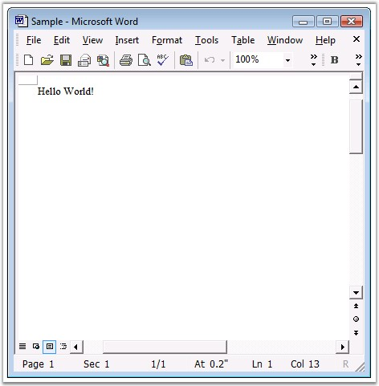

Now, you have created a WPF application (refer Creating Platform Application). This section covers the following:
· Deploying Essential DocIO in a WPF Application
· Creating a Word Document
Deploying Essential DocIO in a WPF Application
The following steps will guide you to deploy Essential DocIO:
1. Go to Solution Explorer of the application you have created. Right-click Reference folder and then click Add References.
2. Add the below mentioned assemblies as references in the application,
· Syncfusion.Core.dll
· Syncfusion.Compression.Base.dll
· Syncfusion.DocIO.Base.dll
 Note: There is no toolbox support for DocIO in WPF
application.
Note: There is no toolbox support for DocIO in WPF
application.
Essential DocIO is now deployed in the WPF application.
Creating a Word Document
In this section, you will learn how to create a simple Word document with "Hello World" written on the first paragraph of the first section.
1. Include the following namespaces in your application.
· Syncfusion.DocIO.DLS (using Syncfusion.DocIO.DLS)
· Syncfusion.DocIO (using Syncfusion.DocIO)
2. Instantiate the WordDocument class.
|
[C#]
// Create a new Word document. // This document has no section and no paragraph by default. WordDocument document = new WordDocument(); |
|
[VB.NET]
' Create a new Word document. ' This document has no section and no paragraph by default. Dim document As WordDocument = New WordDocument() |
Note: The WordDocument class represents the Word
documents created in memory. This is the memory representation of the Word
document written to disk.
3. Add a section to the newly created Word document by using the following code.
|
[C#]
// Add a new section to the document. IWSection section = document.AddSection(); |
|
[VB.NET]
' Add a new section to the document. Dim section As IWSection = document.AddSection() |
4. Add a paragraph to the newly created section in the Word document by using the following code.
|
[C#]
// Add a new paragraph to the section. IWParagraph paragraph = section.AddParagraph(); |
|
[VB.NET]
' Add a new paragraph to the section. Dim paragraph As IWParagraph = section.AddParagraph() |
5. Add a paragraph to the newly created section in the Word document by using the following code.
|
[C#]
// Insert text into the paragraph. paragraph.AppendText("Hello World!"); |
|
[VB.NET]
' Insert text into the paragraph. paragraph.AppendText("Hello World!") |
6. Finally, save the Word document. The following code example illustrates how to do this.
|
[C#]
// Saving the document to disk. document.Save("Sample.doc", FormatType.Doc); |
|
[VB.NET]
' Saving the document to disk. document.Save("Sample.doc", FormatType.Doc) |
The sample Word document created through the above procedure is shown below.

Figure 19: Word Document
A Word document is created in the WPF application.